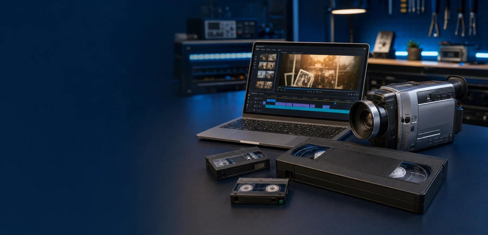

Originalgetreu übertragen
Die Aufnahme wird in Echtzeit erfasst und als digitale Videodatei ausgegeben.

VHS- & Videokassetten-Digitalisierung
Familienfilme, besondere Momente und alte Camcorder-Aufnahmen werden sorgfältig in moderne MP4-Dateien übertragen. Persönlich betreut in Freudenstadt und verständlich erklärt.
Analog wird digital
Magnetbänder verlieren mit den Jahren an Qualität und passende Abspielgeräte werden seltener. Durch die Digitalisierung bleiben die vorhandenen Aufnahmen leichter zugänglich, kopierbar und auf modernen Geräten abspielbar.
Die Aufnahme wird in Echtzeit erfasst und als digitale Videodatei ausgegeben.
Dateien werden auf technische Lesbarkeit, Bild, Ton und vollständige Ausgabe geprüft.
Die fertigen MP4-Dateien kommen auf einen geeigneten USB-Speicher oder Datenträger.
Formate
Das genaue Format und der Bandzustand werden vor Annahme geprüft. Bei seltenen oder beschädigten Medien erfolgt zuerst eine individuelle Einschätzung.
Klassische große Videokassetten aus Videorekordern.
Kompakte Kassetten älterer Camcorder, häufig mit VHS-Adapter genutzt.
Kleine 8-mm-Camcorder-Kassetten, abhängig von Format und Abspielbarkeit.
Digitale Camcorder-Kassetten; Annahme nach technischer Vorprüfung.
Preisbeispiele
Die Staffel gilt für VHS und VHS-C mit bis zu 90 Minuten tatsächlicher Aufnahmezeit je Kassette. Vor Beginn erhältst du eine nachvollziehbare Einschätzung.
Für VHS und VHS-C: Anzahl und Aufnahmezeit wählen – die Schätzung rechnet mit genau der Staffel aus der Tabelle oben.
Wähle Anzahl und Aufnahmezeit für eine unverbindliche Schätzung.
Unverbindliche Schätzung auf Basis der Preisbeispiele. Maßgeblich sind tatsächliche Aufnahmezeit, Format und Zustand der Kassetten.Unverbindliche Preisbeispiele für normal abspielbare Medien. Maßgeblich sind tatsächliche Aufnahmezeit, Format, Zustand und gewünschte Ausgabe. Zusatzarbeiten erfolgen nur nach Rücksprache.
Ablauf
Anzahl, Kassettenformat und ungefähre Laufzeit mitteilen.
Medien werden nach Termin angenommen und äußerlich geprüft.
Die Aufnahmen werden in Echtzeit übertragen und kontrolliert.
Du erhältst die MP4-Dateien und selbstverständlich deine Originale zurück.
Häufige Fragen
Die Digitalisierung bewahrt die vorhandene Aufnahme. Sie kann Alterung nicht vollständig rückgängig machen; die erreichbare Qualität hängt vom Originalband ab.
Alle übergebenen Kassetten werden nach Abschluss gemeinsam mit den digitalen Dateien zurückgegeben.
MP4-Dateien funktionieren auf vielen aktuellen Fernsehern, Computern und Mediaplayern. Die konkrete Kompatibilität hängt vom jeweiligen Gerät ab.
Solche Medien müssen vorab geprüft werden. Eine Bearbeitung ist nicht immer möglich und erfolgt nur nach gesonderter Absprache.
Da Videokassetten in Echtzeit übertragen werden, hängt die Dauer von Anzahl und Laufzeit ab. Ein realistischer Termin wird bei Annahme abgestimmt.
Bitte übergib nur eigene Aufnahmen oder Medien, für deren Vervielfältigung du die erforderlichen Rechte besitzt.
Unverbindlich anfragen
Nenne Format, Anzahl und ungefähre Laufzeit. Danach lässt sich das Angebot schnell einschätzen.